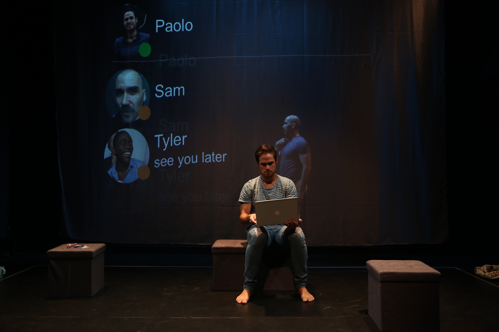
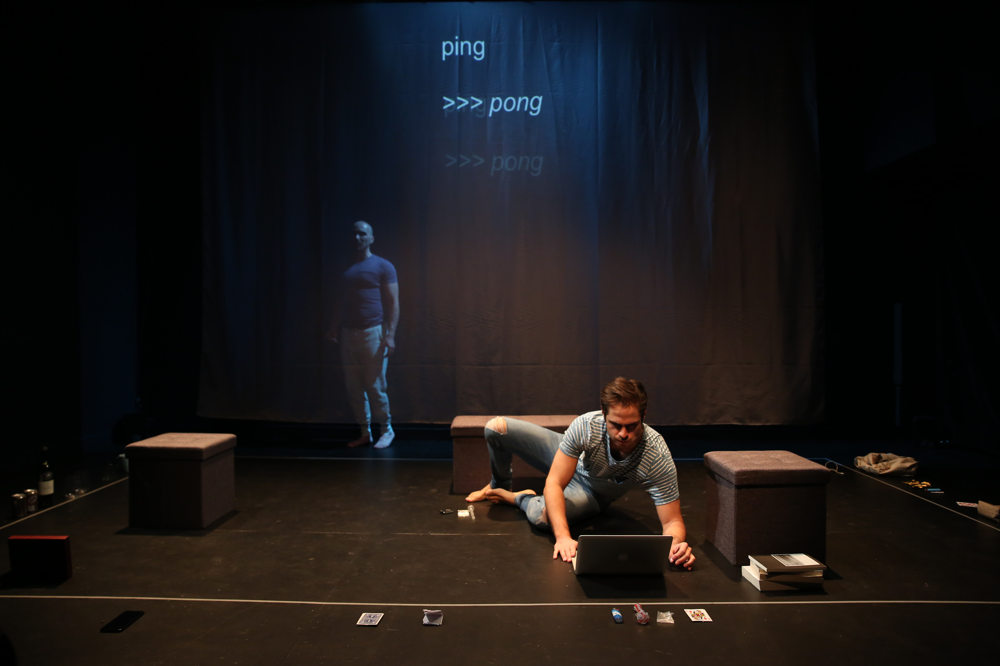
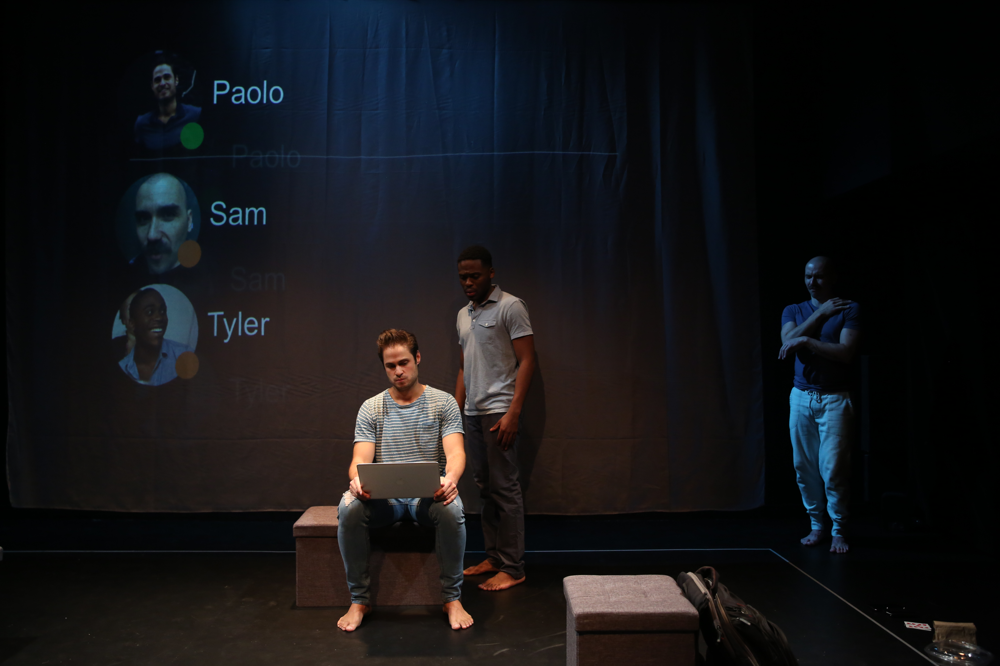

The Waiting Game
Sam’s in a coma. Paolo’s doing his best. When Geoff reveals a secret, reality and fantasy blur. This NYC premiere from critically acclaimed Snowy Owl follows a sold-out, award-winning run in the Edinburgh Fringe (Best Overseas Play, Derek Awards) and explores relationships in the digital age.
For my role, I iterated and reimagined the previous video designs. I worked with the director and entire design team to bring these conversations from beyond into our character's reality.





Credits
By Charles Gershman
Directed by Nathan Wright
Cast: Joshua Bouchard, Julian Joseph, Ibsen Santos, and Marc Sinoway
Set Design by Riw Rakkulchon
Lighting Design by Drew Florida
Sound Design by Emma Wilk
Video Design by Kat Sullivan
Production Stage Manager: Bonnie McHeffey
Tools used
Cinder, Processing, and QLab
Exhibitions
February 10–February 23, 2019
Belasco Theatre
NY, NY
Selected Press
2017 –
Broadway Review: Michael Moore’s ‘The Terms of My Surrender’, Variety
Michael Moore: The Terms of My Surrender, New York Theatre Guide